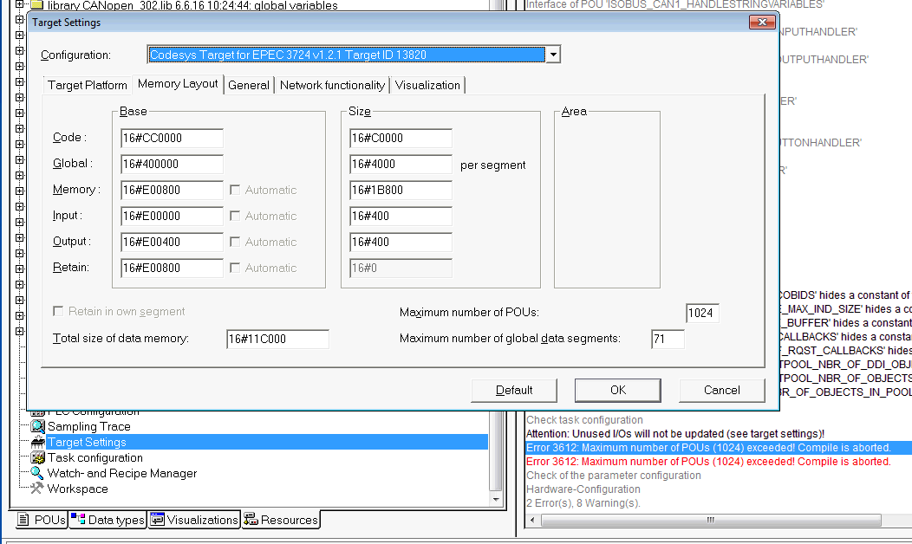

CODESYS build gives an error message ”Maximum number of POUs is exceeded! Compile is aborted”
In MultiTool Creator Library Manager, unselect unused libraries, for example ISOBUS libraries if you are not using ISOBUS.
or
In CODESYS IDE, go to to Resources > Target Settings and increase the Maximum number of POUs to be larger than 1200:

MultiTool Creator gives an error message ”Project directory structure not valid” when opening and updating a project that is created using MultiTool Creator version that is older than 5.0.
Navigate to the updated folder structure and open the project file from there.
old folder structure: ..\folder\Project.net
updated folder structure: ..\folder\Project\Project.net
Imported EDS content does not show correctly in MultiTool Creator (incorrect TPDO / RPDO mappings in OD).
Navigate to File > Settings, open Environment tab and unselect Convert EDS/DCF Array to SingleVariables box. Then import the EDS again.
or
Open the EDS file and add ;@EPEC_MULTITOOL_ARRAYOF_VARIABLES before OD index definitions, for example:
|
;@EPEC_MULTITOOL_ARRAYOF_VARIABLES [6000] ParameterName=Read input 8 bit ObjectType=0x8 SubNumber=5
[6000sub0] ParameterName=NrOfObjects ObjectType=0x7 DataType=0x0005 AccessType=ro DefaultValue=4 PDOMapping=0
[6000sub1] ParameterName=Read input 8-bit1 ObjectType=0x7 DataType=0x0005
|
Epec Oy reserves all rights for improvements without prior notice.
Source file topic200094.htm
Last updated 25-Jun-2025